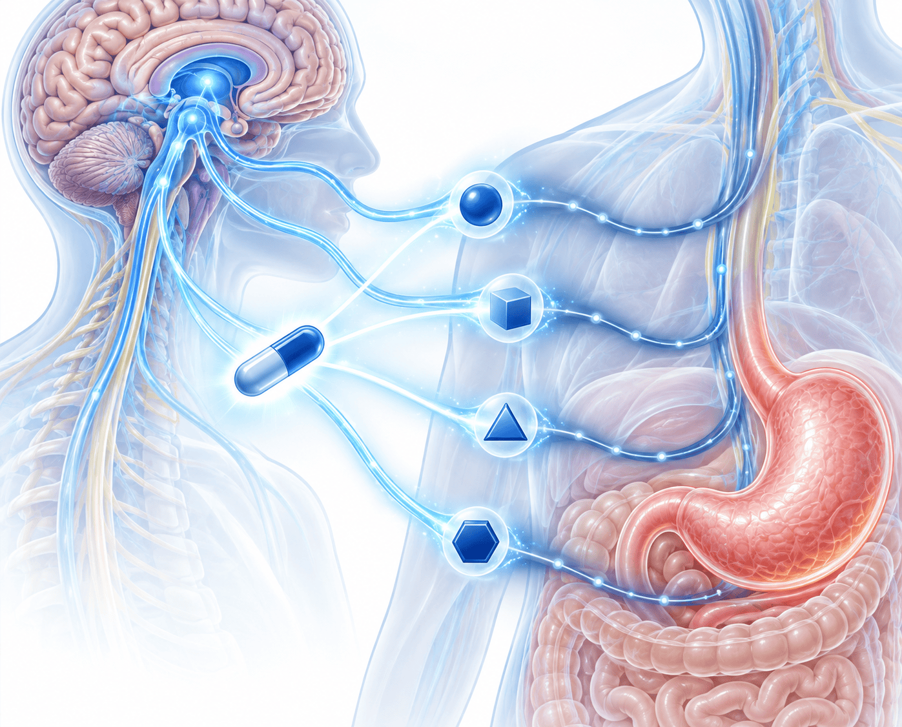

올란자핀을 왜 처방받았을까요

처방 이유
항암제로 생기는 구역·구토(CINV, 항암제 유발 구역·구토)는 항암 치료를 받는 병원에서 미리 예방약을 씁니다. 그래도 구역·구토가 생기면 예방요법에 쓰지 않은 다른 작용 방식의 약을 더하는 것이 좋고, 그중 강하게 권하는 약이 올란자핀입니다.
올란자핀은 5-HT₂(세로토닌)·D₂(도파민)·히스타민 등 여러 곳을 한꺼번에 막는 약입니다. 병원 예방요법에 온단세트론·팔로노세트론 등이 들어갔다면 올란자핀을 더하는 쪽이 더 유익합니다.
약국에서 “정신과에서 쓰는 약”이라는 말을 들으실 수 있습니다. 정신과에서 쓰는 약이 맞지만 구역·구토에 매우 효과적이라 처방한 것입니다.
 이렇게 드십니다
이렇게 드십니다
1회 용량
5mg
하루 한 번 드시는 용량으로 권합니다
복용 기간
3일 정도
하루 한 번 × 3일
고령 환자
2.5mg
절반 용량도 효과가 좋습니다
발표 슬라이드에는 5~10mg, 하루 한 번, 3일로 적혀 있습니다. 질의응답에서 연자는 “보통 2.5mg만 해도 효과가 아주 좋다”고 답했습니다. 실제 용량과 기간은 처방전대로 드세요.
졸림 — 처음 드시면 잠이 많이 온다는 분들이 있습니다. 연자는 초반에 졸릴 수 있지만 곧 적응되어 괜찮아지고 구역·구토는 아주 잘 조절될 것이라고 설명했습니다.
 예방약에도 구토가 생길 때(돌발성) 지키는 3가지
예방약에도 구토가 생길 때(돌발성) 지키는 3가지
1다른 작용의 약 추가
예방요법에 쓰지 않은 다른 기전의 약을 더합니다. 올란자핀이 여기에 해당합니다.
2정해진 시간에 규칙적으로
필요할 때만(PRN) 드시기보다 정해진 시간에 규칙적으로 드시도록 처방합니다.
3탈수·전해질 함께 바로잡기
구토로 빠져나간 수분과 전해질을 보충하는 치료를 함께 합니다.
 약값·보험 — 질의응답에서 연자의 답변
약값·보험 — 질의응답에서 연자의 답변
올란자핀 급여 처방이 가능한지 묻는 질문에 연자는 올란자핀이 인정 비급여 약제라고 답했습니다. 연자 병원 기준 약가는 2.5mg 645원 · 5mg 1,106원 · 10mg 1,965원이라고 했습니다.
 내 항암제의 구토 위험도 (예방요법을 쓰지 않았을 때 기준)
내 항암제의 구토 위험도 (예방요법을 쓰지 않았을 때 기준)
| 위험도 | 구토 발생 | 대표 항암제 |
|---|---|---|
| 고도 | 90% 초과 | 시스플라틴 · 카보플라틴(AUC≥4) · AC 요법 · 다카바진 등 |
| 중등도 | 30~90% | 옥살리플라틴 · 이리노테칸 · 독소루비신 · 시클로포스파미드 등 |
| 경도 | 10~30% | 탁산(파클리탁셀·도세탁셀) · 젬시타빈 등 |
| 최소 | 10% 미만 | 대부분의 단클론항체·면역항암제 |
여러 항암제를 함께 쓰면 가장 위험도가 높은 약을 기준으로 나눕니다.